- HEMATOLOGICAL NURSING(1).pdf1.8MB
Processing file: HEMATOLOGICAL NURSING(1).pdf
- By the end of the module, the learner should be able to describe common hematologic conditions
- Discuss the risk factors, causes and pathophysiologic basis of the disease process.
- Describe the presenting signs of symptoms of the different hematologic diseases.
- Understand the potential complications and consequences of the disease and various treatment options.
- ANEMIAS;
- Congenital and deficiency blood disorders
- Hemolytic and hemorrhagic blood disorders
- Abnormalities related to blood formation
- BLOOD CANCERS;
- Polycythemia vera
- Leukaemia
- Lymphomas
- Myeloma
- Agranulocytosis
- Hypoprothrombinaemia.
- Thrombocytopenic purpura
- Haemophilia
- Disseminated intravascular coagulation. (DIC)
- Von Willebrand disease (types I, II, and III)
- Anemia, per se, is not a specific disease state but a sign of an underlying disorder.
- Is a condition in which the hemoglobin concentration is lower than normal, reflecting the presence of fewer than normal RBCs within the circulation.
- As a result, the amount of oxygen delivered to body tissues is also diminished.
- There are many different kinds of anemia
- Abnormal & deficient production, blood loss, destruction of RBC (Causes)
- Low Hgb
- Bone marrow aspiration, Peripheral smear (Diagnosis)
- Less than 02 carrying capacity (Diagnosis)
- Hypoxia
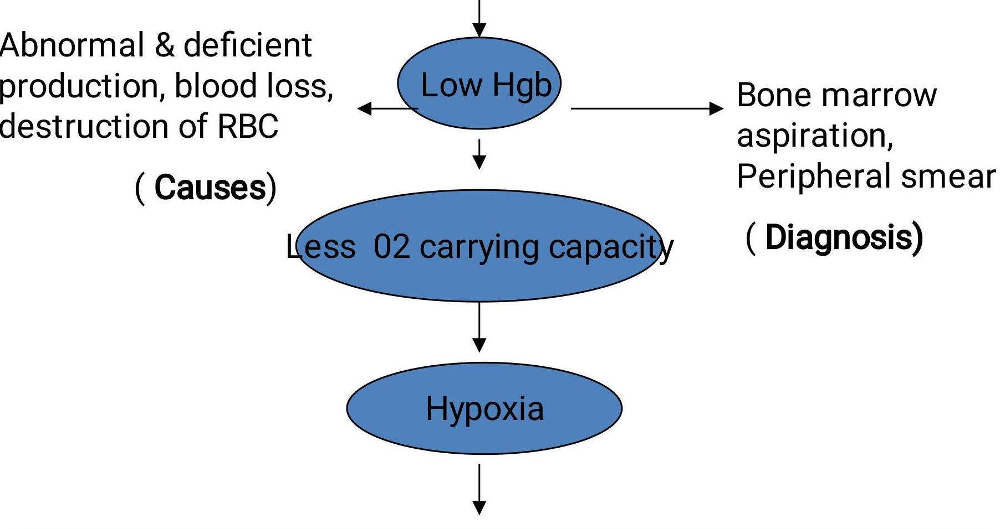
Pallor, Fatigue, Palpitation, Low BP, SOB, DOE, MI, Renal failure
Three broad etiologic categories:
Loss of RBCs (Bleeding) :
- Occurs with bleeding, potentially from any major source, such as the gastrointestinal tract, the uterus, the nose, or a wound
Decreased production of RBCs (Hypoproliferative):
- RBCs survive normally, but the marrow cannot produce adequate numbers of these cells. caused by a deficiency in co-factors (including folic acid, vitamin B, and iron) required for erythropoiesis;
- RBC production may also be reduced if the bone marrow is suppressed (eg, by tumor, medications, toxins) or is inadequately stimulated because of a lack of erythropoietin (as occurs in chronic renal disease).
- Arises from premature destruction of RBCs, which results in a liberation of hemoglobin from the RBC into the plasma.
- It may occur because of an overactive Reticuloendothelial system (RES)(including hypersplenism) or because the bone marrow produces abnormal RBCs that are then destroyed by the RES (eg, sickle cell anemia).
- Hemolysis can result from an abnormality within the RBC itself (eg, sickle cell anemia) or within the plasma (eg, immune hemolytic anemias), or from direct injury to the RBC within the circulation (eg, hemolysis caused by mechanical heart valve).
Defective DNA Synthesis, due to:
- Cobalamin/Vitamin B12 Deficiency
- Folic Acid Deficiency
Decreased Hemoglobin Synthesis, due to:
- Iron Deficiency
- Thalassemia (Decreased Globin Synthesis)
Decreased Number of Erythrocyte Precursors, due to:
- Aplastic Anemia
- Leukumia and Myelodysplasia
- Chronic Diseases
- Abnormal Hemoglobin (Sickle Cell Anemia)
- Enzyme Deficiency
- Physical Trauma
- Antibodies (Autoimmune and Isoimmune)
- Infectious Agents
- Toxins (Snake Venom; Chemotherapy)
- Trauma
- Blood Vessel Rupture
- Gastritis
- Hemorrhiods
- Menstruation
- Aside from the severity of the anemia itself, several factors influence the development of anemiaassociated symptoms:
- The speed with which the anemia has developed
- The duration of the anemia (i.e, its chronicity)
- The metabolic requirements of the individual
- Other concurrent disorders or disabilities (eg cardiopulmonary disease)
- Special complications or concomitant features of the condition that produced the anemia
- In general, the more rapidly an anemia develops, the more severe its symptoms.
- Complete blood count (CBC)
- Hemoglobin
- Hematocrit,
- Iron studies (serum iron total iron-binding capacity [TIBC]
- Erythropoietin levels.
- Bone marrow aspiration
- General complications of severe anemia include:
- heart failure,
- paresthesias, and
- confusion.
- Complications associated with specific types of anemia are included in the description of each type.
Based on the assessment data, major nursing diagnoses for the anemic patient may include:
- Activity intolerance related to weakness, fatigue, and general malaise
- Imbalanced nutrition, less than body requirements, related to inadequate intake of essential nutrients
- Ineffective tissue perfusion related to inadequate blood volume or hematocrit
- Noncompliance with prescribed therapy
- Direct general management toward addressing the cause of anemia and replacing blood loss as needed to sustain adequate oxygenation.
- Promote optimal activity and protect the patient from injury.
- Reduce activities and stimuli that cause tachycardia and increase cardiac output.
- Provide nutritional needs.
- Administer any prescribed nutritional supplements.
- Patient and family education
- Focus on assisting the patient to prioritize activities and to establish a balance between activity and rest that is realistic and feasible from the patient's perspective.
- Patients with chronic anemia need to maintain some physical activity and exercise to prevent the deconditioning that results from inactivity
- Inadequate intake of essential nutrients, such as iron, vitamin B, folic acid, and protein can cause some anemias.
- The symptoms associated with anemia (eg, fatigue, anorexia) can in turn interfere with maintaining adequate nutrition.
- A healthy diet should be encouraged.
- Because alcohol interferes with the utilization of essential nutrients, the nurse should advise the patient to avoid alcoholic beverages or to limit their intake and should provide the rationale for this recommendation.
- Patients with acute blood loss or severe hemolysis may have decreased tissue perfusion from decreased blood volume or reduced circulating RBCs (decreased hematocrit).
- Lost volume is replaced with transfusions or intravenous fluids, based on the symptoms and the laboratory findings.
- Supplemental oxygen may be necessary, but it is rarely needed on a long-term basis unless there is underlying severe cardiac or pulmonary disease as well.
- The nurse monitors vital signs closely; other medications, such as antihypertensive agents, may need to be adjusted or withheld.
- For patients with anemia, medications or nutritional supplements are often prescribed to alleviate or correct the condition.
- These patients need to understand the purpose of the medication, how to take the medication and over what time period, and how to manage any side effects of therapy.
- To enhance compliance, the nurse can assist patients in developing ways to incorporate the therapeutic plan into their lives, rather than merely giving the patient a list of instructions.
- A significant complication of anemia is heart failure from chronic diminished blood volume and the heart's failed compensatory effort to increase cardiac output.
- Assess for signs and symptoms of heart failure.
- In the case of fluid retention resulting from congestive heart failure, diuretics may be required.
- Administer oxygen as prescribed
- Administer blood products as prescribed
- Administer erythropoietin as prescribed
- Allow for rest between periods of activity
- Elevate the pt's head on pillows during episodes of shortness of breath
- Provide extra blankets if the pt feels cold
- Teach the pt/family about underlying pathophysiology and how to manage the symptoms of anemia
i. Iron Deficiency Anemia ii. Megaloblastic Anemia iii. Thalassemia (read on this)
- Inadequate dietary intake
- Found in of the world's population
- Malabsorption
- Absorbed in duodenum
- GI surgery
- Blood loss
- 2 mls blood contain 1 mg iron
- GI, GU losses
- Hemolysis
- Most common: pallor
- Second most common: inflammation of the tongue (glossitis)
- Cheilitis = inflammation/fissures of lips
- Sensitivity to cold
- Weakness and fatigue
- CBC
- Iron studies
- Iron levels: Total iron-binding capacity (TIBC), Serum Ferritin.
- Endoscopy/Colonoscopy
-
Treatment of underlying disease/problem
-
Diet
-
Drug Therapy
-
Iron replacement
-
Oral iron » Feosol, DexFerrum, etc » Absorbed best in acidic environemt » Has GI effects
-
Parenteral iron » IM or IV » Less desirable than PO
-
Assess cardiovascular & respiratory status
-
Monitor vital signs
-
Recognizing s/s of bleeding:
- Monitor stool, urine, and emesis for occult blood
-
Diet teaching—foods rich in iron
-
Provide periods of rest
-
Supplemental iron
-
Discuss diagnostic studies
-
Emphasize compliance
-
Iron therapy for 2-3 months after the hemoglobin levels return to normal
- Characterized by large RBCs which are fragile and easily destroyed
- Common forms of megaloblastic anemia are:
- Cobalamin deficiency
- Folic acid deficiency
- A bone marrow analysis reveals hyperplasia (abnormal increase in the number of cells)
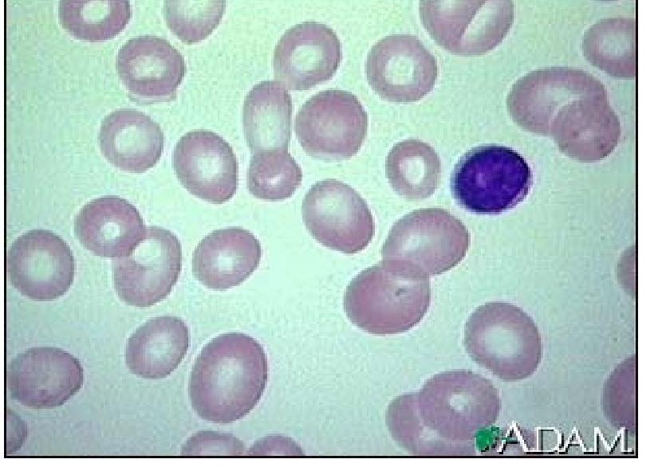
This picture shows large, dense, oversized, red blood cells (RBCs) that are seen in megaloblastic anemia.
- Many of these abnormal RBCs and myeloid cells are destroyed within the marrow, however, the mature cells that do leave the marrow are actually fewer in number. Thus, pancytopenia (a decrease in all myeloid-derived cells) can develop.
- The platelets may be abnormally large. The RBCs are abnormally shaped, and the shapes may vary widely (poikilocytosis).
- Cobalamin Deficiency- was formerly known as pernicious anemia
- Vitamin B
- Intrinsic factor (IF) is required for cobalamin absorption
- Causes of cobalamin deficiency
- Gastric mucosa not secreting IF
- GI surgery loss of IF-secreting gastric mucosal cells
- Long-term use of H
- Nutritional deficiency
Hereditary defects of cobalamin utilization
- General symptoms of anemia
- Sore tongue
- Anorexia
- Weakness
- Paraethesias of the feet and hands
- Altered thought processes:
- Confusion dementia
- Parenteral administration of cobalamin
- ij Dietary cobalamin does not correct the anemia
- Still important to emphasize adequate dietary intake
- Intranasal form of cyanocobalamin (Nascobal) is available
- High dose oral cobalamin and SL cobalamin can also be used
- Familial tendency
- Early detection and treatment can lead to reversal of symptoms
- Compliance with medication regime
- Ongoing evaluation of GI and neuro status
- Evaluate patient for gastric carcinoma frequently
-
Folic Acid Deficiency also causes megaloblastic anemia (RBCs that are large and fewer in number)
-
Folic Acid is required for RBC formation and maturation
-
Causes
-
Poor dietary intake
-
Malabsorption syndromes
-
Drugs that inhibit absorption
-
Alcohol abuse
-
Hemodialysis
-
Clinical manifestations are similar to those of cobalamin deficiency
-
Insidious onset: progress slowly
-
Absence of neurologic problems
-
Treated by folate replacement therapy
-
Encourage patient to eat foods with large amounts of folic acid
-
Leafy green vegetables
-
Liver
-
Mushrooms
-
Peanut butter
-
Red beans
- Underproduction of RBCs, shortening of RBC survival
- most common cause of anemia (after iron deficiency anemia)
- Generally develops after 1-2 months of sustained disease
- Causes
- Impaired renal function
- Chronic, inflammatory, infectious or malignant disease
- Chronic liver disease
- Folic acid deficiencies
- Splenomegaly
- Hepatitis
- Characterized by Pancytopenia
- ' of all blood cell types
- RBCs
- White blood cells (WBCs)
- Platelets
- Hypocellular bone marrow
- Etiology
- Congenital: Chromosomal alterations
- Acquired: Results from exposure to ionizing radiation, chemical agents, viral and bacterial infections
- Low incidence
- Affecting 4 of every 1 million persons
- Manageable with erythropoietin or blood transfusion
- Can be a critical condition leading to:
- Hemorrhage
- Sepsis
-
Gradual development
-
Symptoms are caused by suppression of any or all bone marrow elements
-
General manifestations of anemia
- Fatigue
- Dyspnea
- Pale skin
- Frequent or prolonged infections
- Unexplained or easy bruising
- Nosebleed and bleeding gums
- Prolonged bleeding from cuts
- Dizziness
- Headache
-
Diagnosis
-
Blood tests:CBC
-
Bone marrow biopsy
-
Treatment
-
Identifying cause
-
Blood transfusions
-
Antibiotics
-
Immunosuppressants (neoral, sandimmune)
-
Corticosteroids (Medrol, solu-medrol)
-
Bone marrow stimulants
-
Filgrastim (Neupogen)
-
Epoetin alfa (Epogen, Procrit)
-
Bone marrow transplantation
-
Nursing Management
-
Preventing complications from infection and hemorrhage
-
Prognosis is poor if untreated (75% fatal)
i. Acute Blood Loss ii. Chronic Blood Loss
- Result of sudden hemorrhage
- Trauma, surgery, vascular disruption
- Collaborative Care
- Replacing blood volume 2.Identifying source of hemorrhage 3.Stopping blood loss
- Symptoms
- Similar to iron deficiency anemia
- Sources: GI bleeding, hemorrhoids, menstrual blood loss
- Diagnostic Studies
- Identifying source
- Stopping bleeding
- Collaborative Care
- Supplemental iron administration
A. Hemolytic Anemia B. Sickle Cell disease
- Destruction or hemolysis of RBCs at a rate that exceeds production
- Third major cause of anemia
- Intrinsic hemolytic anemia
- Abnormal hemoglobin levels
- Enzyme deficiencies
- RBC membrane abnormalities
- Extrinsic hemolytic anemia
- Normal RBCs
- Damaged by external factors
- Liver and Spleen
- Toxins
- Mechanical injury (heart valves)
- Causes
- Medications
- Infections
- Manifestations
- S/S of anemia
- Complications
- Accumulation of hemoglobin molecules can obstruct renal tubules Tubular necrosis
- Treatment
- Eliminating the causative agent
-
Severe hemolytic anemia that results from inheritance of the sickle hemoglobin gene.
-
This gene causes the hemoglobin molecule to be defective.
-
The sickle hemoglobin (HbS) acquires a crystal-like formation when exposed to low oxygen tension.
-
The oxygen level in venous blood can be low enough to cause this change; consequently, the RBC containing (HbS) loses its round, very pliable, biconcave disk shape and becomes deformed, rigid, and sickle-shaped
-
These long, rigid RBCs can adhere to the endothelium of small vessels; and when they pile up against each other, blood flow to a region or an organ may be reduced
-
If ischemia or infarction results, the patient may have pain, swelling, and fever.
-
The sickling process takes time; if the RBC is again exposed to adequate amounts of oxygen (eg, when it travels through the pulmonary circulation) before the membrane becomes too rigid, it can revert to a normal shape.
-
For this reason, the "sickling crises" are intermittent.
-
Cold can aggravate the sickling process, because vasoconstriction slows the blood flow.
-
Oxygen delivery can also be impaired by an increased blood viscosity, with or without occlusion due to adhesion of sickled cells.
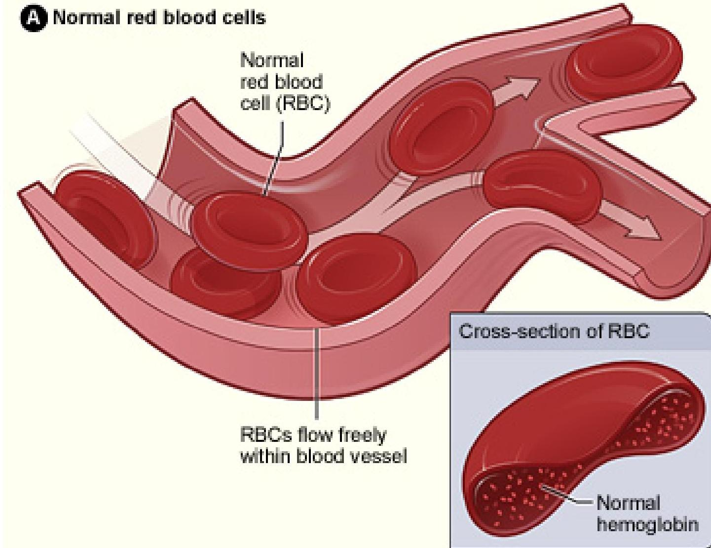
Figure A shows normal red blood cells flowing freely in a blood vessel.
The inset image shows a cross-section of a normal red blood cell with normal hemoglobin.
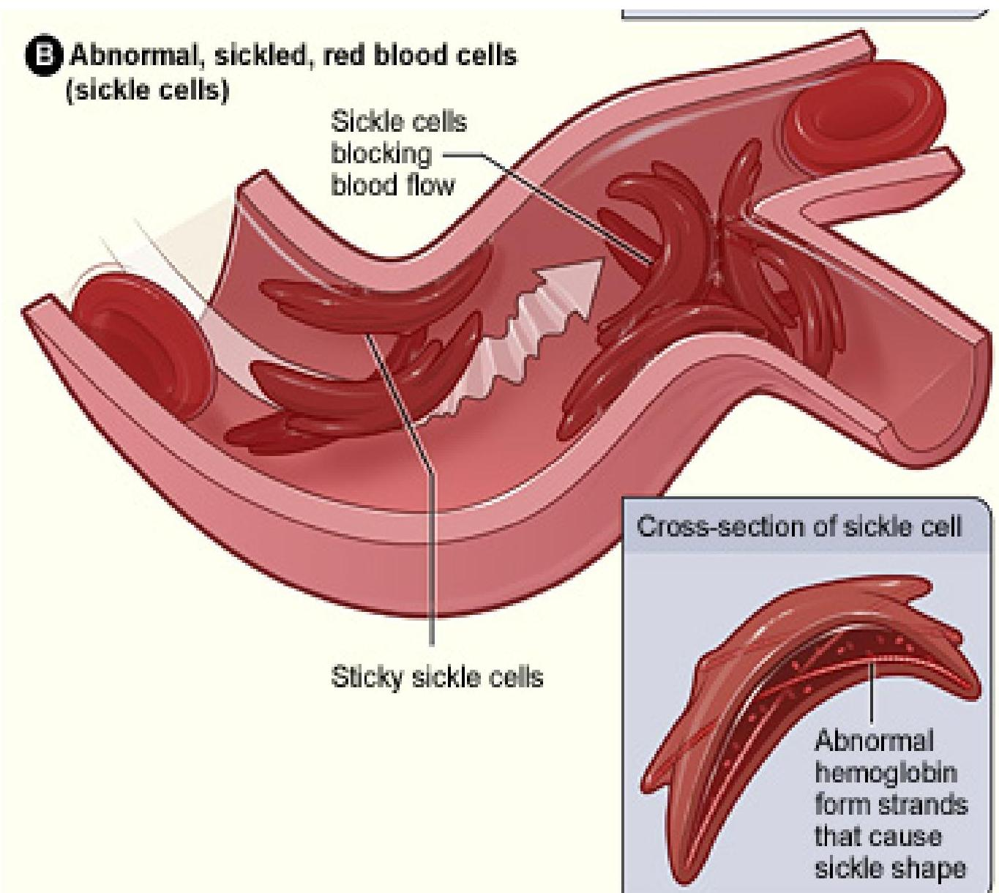
Figure B shows abnormal, sickled red blood cells clumping and blocking the blood flow in a blood vessel.
The inset image shows a cross-section of a sickled red blood cell with abnormal strands of
- People who have sickle cell anemia are born with it; means its an inherited, lifelong condition.
- They inherit two copies of sickle cell gene, one from each parent.
- Sickle cell trait is different from sickle cell anemia. People with sickle cell trait don't have the condition, but they have one of the genes that cause the condition.
- People with sickle cell anemia and sickle cell trait can pass the gene on when they have children.
- If one parent has sickle cell anaemia (HbSS) and the other is completely unaffected (HbAA) then all the children will have sickle cell trait.
- None will have sickle cell anemia.
- The parent who has sickle cell anemia (HbSS) can only pass the sickle hemoglobin gene to each of their children.
- A5
- A5
- A5
- A5
- A5
- trait
- trait
- trait
- A5
- A5
- trait
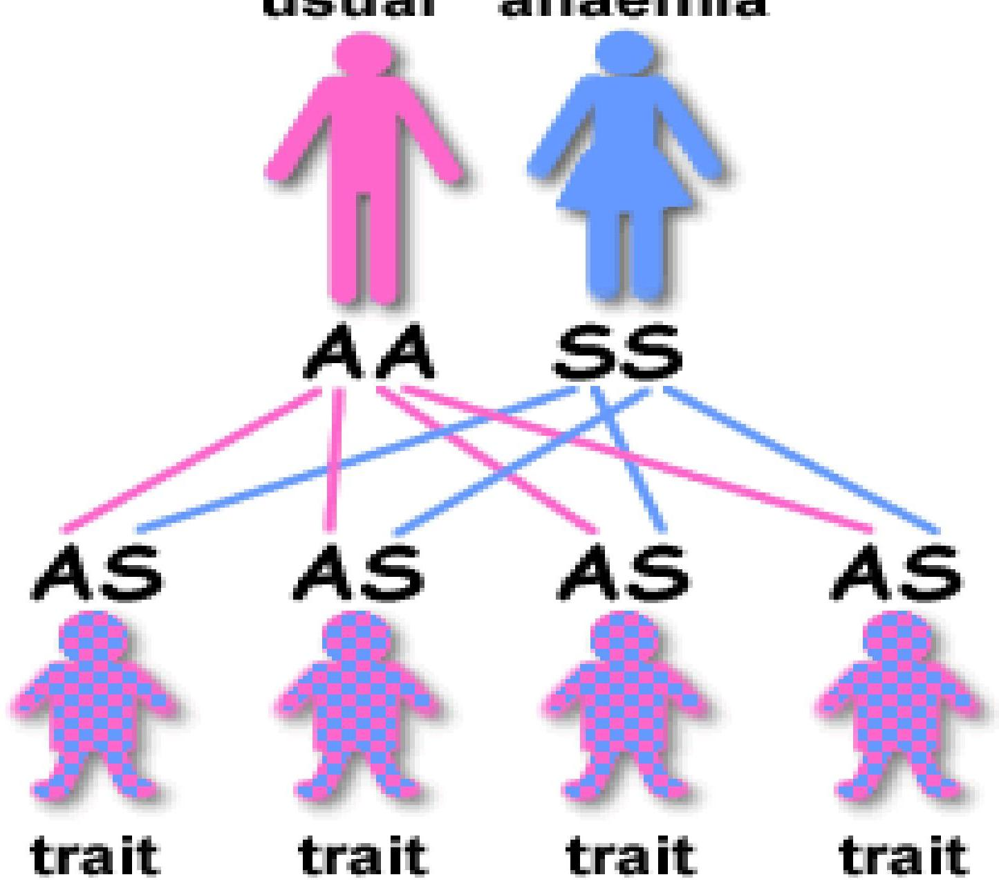
- If both parents have sickle cell trait (HbAS) there is a one in four (25%) chance that any given child could be born with sickle cell anemia.
- There is also a one in four chance that any given child could be completely unaffected.
- There is a one in two (50%) chance that any given child will get the sickle cell trait.
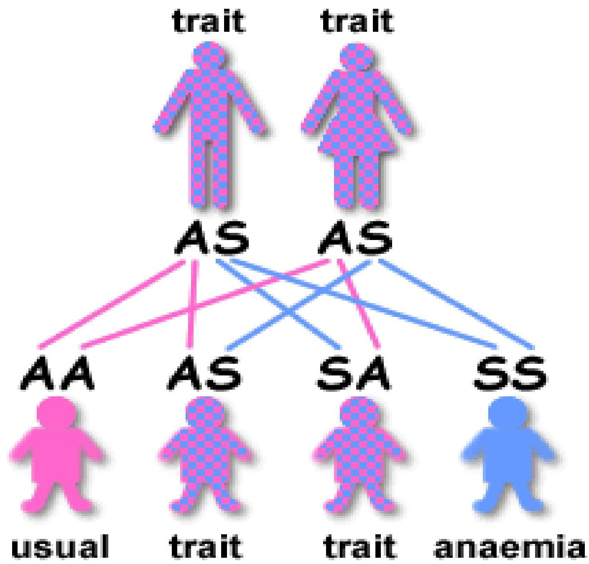
- Symptoms of sickle cell anemia vary and are only somewhat based on the amount of HbS.
- Symptoms and complications result from chronic hemolysis or thrombosis.
- Anaemia - Hbvalues of 7 to .
- Jaundice
- Enlargement of the bones of the face and skull due to bone marrow expansion in childhood
- tachycardia, cardiac murmurs, and often cardiomegaly.
- Dysrhythmias and heart failure may occur in adults.
| ORGAN INVOLVED | MECHANISMS* | ASSESSMENT FINDINGS | SYMPTOM |
|---|---|---|---|
| Spleen | Primary site of sickling infarctions <br> phagocytic function of macrophages | Autosplenectomy; infection <br> (esp. pneumonia, osteomyelitis) | Abdominal pain; fever, signs of <br> infection |
| Lungs | Infection <br> Infarction pulmonary pressure <br> pulmonary hypertension | Pulmonary infiltrate <br> | Chest pain; dyspnea |
| Central Nervous <br> System | Infarction | CVA (cerebral vascular accident, <br> brain attack) | Weakness (if severe); learning <br> difficulties (if mild) |
| Kidney | Sickling damage to renal medulla | Hematuria; inability to concentrate <br> urine; renal failure | Dehydration |
| Heart | Anemia | Tachycardia; cardiomegaly <br> heart failure | Weakness, fatigue, dyspnea |
| Bone | Erythroid production | Widening of medullary spaces <br> and cortical thinning | Ache |
| Infarction of bone | Osteosclerosis avascular necrosis | Bone pain, especially hips | |
| Liver | Hemolysis | Jaundice and gallstone formation; <br> hepatomegaly | Abdominal pain |
| Skin and peripheral <br> vasculature | Viscosity/stasis infarction <br> skin ulcers | Skin ulcers; wound healing | Pain |
| Eye | Infarction | Scarring, hemorrhage, retinal <br> detachment | Vision; blindness |
| Penis | Sickling | Priapism impotence | Pain, impotence |
- 3 types of sickle cell crisis occur in the adult population. -sickle crisis, which results from tissue hypoxia and necrosis due to inadequate blood flow to a specific region of tissue or organ. Usually very painful -Aplastic crisis results from infection with the human parvovirus. The hemoglobin level falls rapidly and the marrow cannot compensate.
-Sequestration crisis results when other organs pool the sickled cells.
- Although the spleen is the most common organ responsible for sequestration in children, by 10 years of age most children with sickle cell anemia have had a splenic infarction and the spleen is then no longer functional (autosplenectomy).
- In adults, the common organs involved in sequestration are the liver and, more seriously, the lungs.
- The patient with sickle cell trait usually has a normal hemoglobin level, a normal hematocrit, and a normal blood smear.
- In contrast, the patient with sickle cell anemia has a low hematocrit and sickle cells on the smear.
- The diagnosis is confirmed by hemoglobin electrophoresis(The motion of charged particles in a colloid under the influence of an electric field; particles with a positive charge go to the cathode and negative to the anode)
- Hydroxyurea (Hydrea), a chemotherapy agent, has been shown to be effective in increasing hemoglobin F levels in patients with sickle cell anemia, thereby decreasing the permanent formation of sickled cells.
- Patients who receive hydroxyurea appear to have fewer painful episodes of sickle cell crisis, and less need for transfusions
- However, whether hydroxyurea can prevent or reverse actual organ damage remains unknown. Side effects of hydroxyurea include chronic suppression of WBC formation, and teratogenesis
Chronic transfusions with RBCs have been shown to be highly effective in:
-
An acute exacerbation of anemia (eg, aplastic crisis),
-
Improving the response to infection
-
Diminishing episodes of sickle cell crisis in pregnant women; however, these transfusions have not been shown to improve fetal survival.
-
Transfusion therapy may be effective in preventing complications from sickle cell disease e.g. cerebral ischemic injury
-
Because repeated blood transfusions are necessary, patients may develop multiple autoantibodies, making cross-matching difficult.
-
In some patient, a hemolytic transfusion reaction may mimic the signs and symptoms of a sickle cell crisis.
-
The classic distinguishing factor is that, with a hemolytic transfusion reaction, the patient becomes more anemic after being transfused.
-
These patients need very close observation. Further transfusion is avoided if possible until the hemolytic process abates.
-
If possible, the patient is supported with corticosteroids, intravenous immunoglobulin, and erythropoietin .
- A significant issue is pain management. The incidence of painful sickle cell crises is highly variable; many patients have pain on a daily basis.
- The pain is severe enough to interfere with the ability to work and function within the family.
- Acute pain episodes tend to be self-limited, lasting hours to days.
- If the patient cannot manage the pain at home, intervention is sought in the acute care setting, usually at an urgent care facility or emergency department.
- Adequate hydration is important during a painful sickling episode.
- Acute pain related to tissue hypoxia due to agglutination of sickled cells within blood vessels
- Deficient knowledge regarding sickle crisis prevention
- Risk for infection
- Risk for powerlessness related to illness-induced helplessness
- Hypoxia, ischemia, infection, and poor wound healing leading to skin breakdown and ulcers
- Dehydration
- Cerebrovascular accident (CVA, brain attack, stroke)
- Anemia
- Renal dysfunction
- Heart failure, pulmonary hypertension, and acute chest syndrome
- Impotence
- Acute pain during a sickle cell crisis can be severe and unpredictable.
- Any joint that is acutely swollen should be supported and elevated until the swelling diminishes.
- Relaxation techniques, breathing exercises, and distraction are helpful for some patients.
- After the acute painful episode has diminished, aggressive measures should be implemented to preserve function.
- Physical therapy and transcutaneous nerve stimulation
- Nursing care focuses on monitoring the patient for signs and symptoms of infection.
- Prescribed antibiotics should be initiated promptly, and the patient should be assessed for signs of dehydration.
- If the patient is to take prescribed oral antibiotics at home, he or she must understand the need to complete the entire course of antibiotic therapy and must be able to identify a feasible administration schedule.
- This illness, because of its acute exacerbations that often result in chronic health problems, frequently leaves the patient feeling powerless and with decreased self-esteem.
- These feelings can be exacerbated by inadequate pain mgt.
- Enhancing pain mgt can be useful in establishing a therapeutic relationship based on mutual trust
- Nursing care that focuses on the patient's strengths rather than deficits can enhance effective coping skills.
- Providing the patient with opportunities to make decisions about daily care may increase the patient's feelings of control.
- Polycythemia is a condition in which there is a net increase in the total number of red blood cells
- Overproduction of red blood cells may be due to
- a primary process in the bone marrow (a socalled myeloproliferative syndrome)
- or it may be a reaction to chronically low oxygen levels or
- malignancy
- Also known as primary polycythemia, is a proliferative disorder in which the myeloid stem cells seem to have escaped normal control mechanisms.
- The bone marrow is hypercellular, and the RBC, WBC, and platelet counts in the peripheral blood are elevated.
- However, the RBC elevation is predominant
- The spleen resumes its embryonic function of hematopoiesis and enlarges.
- Over time, the bone marrow may become fibrotic, with a resultant inability to produce as many cells
-
Patients typically have a ruddy complexion (reddish color) and splenomegaly (enlarged spleen).
-
The symptoms result from the increased blood volume (headache, dizziness, tinnitus, fatigue, paresthesias, and blurred vision) or from increased blood viscosity (angina, dyspnea, and thrombophlebitis), particularly if the patient has atherosclerotic blood vessels.
-
Another common and bothersome problem is generalized pruritus, which may be caused by histamine release due to the increased number of basophils.
-
Erythromelalgia, a burning sensation in the fingers and toes, may be reported.
-
Complications
-
ij viscosity of blood
-
thrombosis
-
CVA or MI
-
Treatment
-
Phlebotomy
-
Myelosupressive agents: A number of new therapeutic agents such as, interferon alfa-2b (Intron A) therapy, agents that target platelet number (e.g., anagrelide [Agrylin]), and platelet function (e.g., aspirin).
- Caused by excessive production of erythropoietin.
- This may occur in response to a reduced amount of oxygen, which acts as a hypoxic stimulus, as in cigarette smoking, COPD, or cyanotic heart disease, or in nonpathologic conditions such as high altitude.
- It can also result from certain hemoglobinopathies in which the hemoglobin has an abnormally high affinity for oxygen.
- Secondary polycythemia can also occur from neoplasms (eg, renal cell carcinoma) that stimulate erythropoietin production.
- A neoplastic proliferation of one particular cell type (granulocytes, monocytes, lymphocytes, or megakaryocytes).
- The defect originates in the hematopoietic stem cell, the myeloid, or the lymphoid stem cell.
- Thelymphomas are neoplasms of lymphoid tissue, usually derived from B lymphocytes.
- The common feature of the leukemias is an unregulated proliferation of WBCs in the bone marrow.
- In acute forms (or late stages of chronic forms), the proliferation of leukemic cells leaves little room for normal cell production.
- There can also be a proliferation of cells in the liver and spleen (extramedullary hematopoiesis).
- With acute forms, there can be infiltration of other organs, such as the meninges, lymph nodes, gums, and skin.
-
The leukemias are commonly classified according to the stem cell line involved, either lymphoid or myeloid.
-
They are also classified as either acute or chronic, based on the time it takes for symptoms to evolve and the phase of cell development that is halted (ie, with few WBCs differentiating beyond that phase).
-
In acute leukemia,
-
The onset of symptoms is abrupt, often occurring within a few weeks.
-
WBC development is halted at the blast phase, so that most WBCs are undifferentiated or are blasts.
-
Acute leukemia progresses very rapidly; death occurs within weeks to months without aggressive treatment.
-
In chronic leukemia,
-
Symptoms evolve over a period of months to years, and the majority of WBCs produced are mature.
-
Chronic leukemia progresses more slowly; the disease trajectory (chronicity) can extend for years.
| Acute | Chronic | |
|---|---|---|
| Myeloi | ||
| d origin | Acute Myeloid Leukemia (AML) | Chronic Myeloid Leukemia (CML) |
| Lymphoid origin | Acute Lymphoblastic Leukemia (ALL) | Chronic Lymphocytic Leukemia (CLL) |
-Idiopathic (most)
- Underlying hematologic disorders
- Chemicals, drugs
- Ionizing radiation
- Viruses (human T-cell lymphotropic virus type 1) (HTLV I)
- Hereditary / genetic conditions
- Fever
- Anemia
- Thrombocytopenia
- Bone pain tenderness (Sternal),
- Migrating joint pains
- Leukemic infiltration of tissues
- Hepatosplenomegaly
- Lymphadenopathy
- Gum hypertrophy
- Leukemic meningitis (ALL)
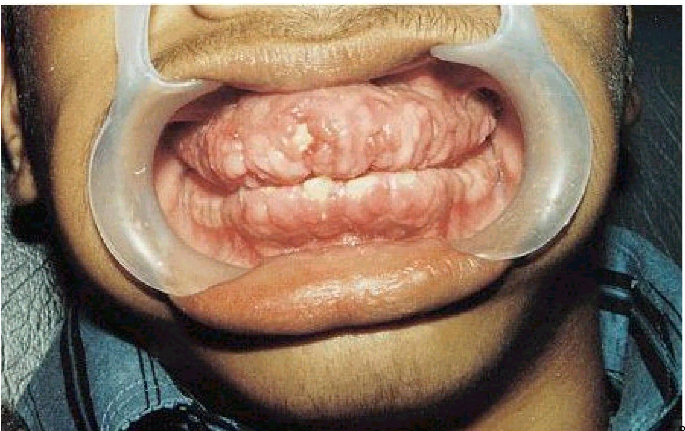
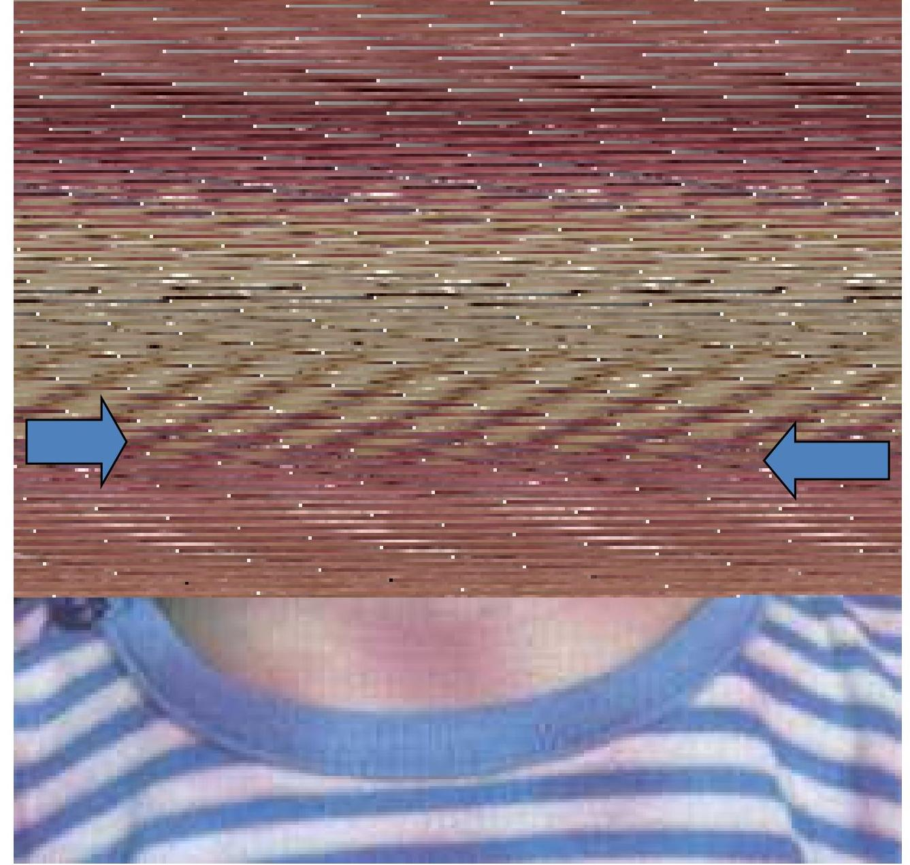
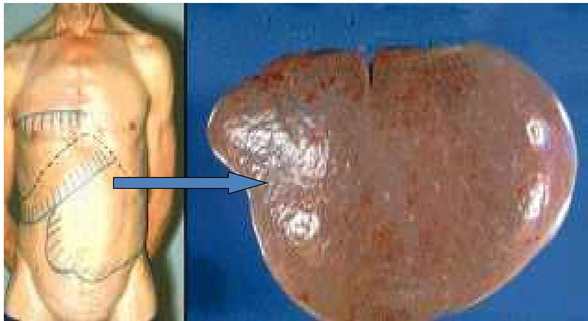
| ALL | AML | |
|---|---|---|
| Age | Common- children | Adults |
| Bleeding | Less | More |
| Lymphadenopathy | More | Less |
| Hepatosplenomegal y | Majority | Less |
| Gum Hypertrophy | - | Common |
| Testicular involvement | 10 to 20% | Less |
| Eye | More | Less |
Normocytic / Normochromic Anemia Thrombocytopenia Total count (20,000 to 50,000 cells) Peripheral blood smear - shows Numerous blast cells X-Ray chest - shows Mediastinal widening
- Supportive
- Anemia - Blood Transfusion
- Thrombocytopenia - Platelet Transfusion
- Infection - Blood culture and sensitivity. Antibiotics.
- Barrier nursing
- Induction Therapy is the initial treatment of an intense course of Chemotherapy with goal of complete remission
- Aggressive chemotherapy treatment aimed at all abnormal cells: reduce 'Blastic Cells' to less than 5% of total bone marrow cells & return CBC to normal values for at least 1 month: approximately 70% success (in newly diagnosed):
- associated with many complications
- anemia
- neutropenia
- thrombocytopenia
- associated with many complications
Intensification Therapy: Aim to eliminate remaining leukemic cells.
- high doses of same of 1-2 drugs used in induction therapy;
- combination therapy: Radiation added if infiltration of CNS, skin, testes, rectum, mediastinal mass
Consolidation Therapy: after remission, this phase of treatment to kill any possible remaining leukemic cells
- maintain remission using similar drugs
- Small doses every 3-4 weeks for 1 - 3 years
- Therapy destroys normal and abnormal cells causing pancytopenia
- Transfusions with Red Blood Cells (RBC's)
- IV Antifungal agent Amphotericin B
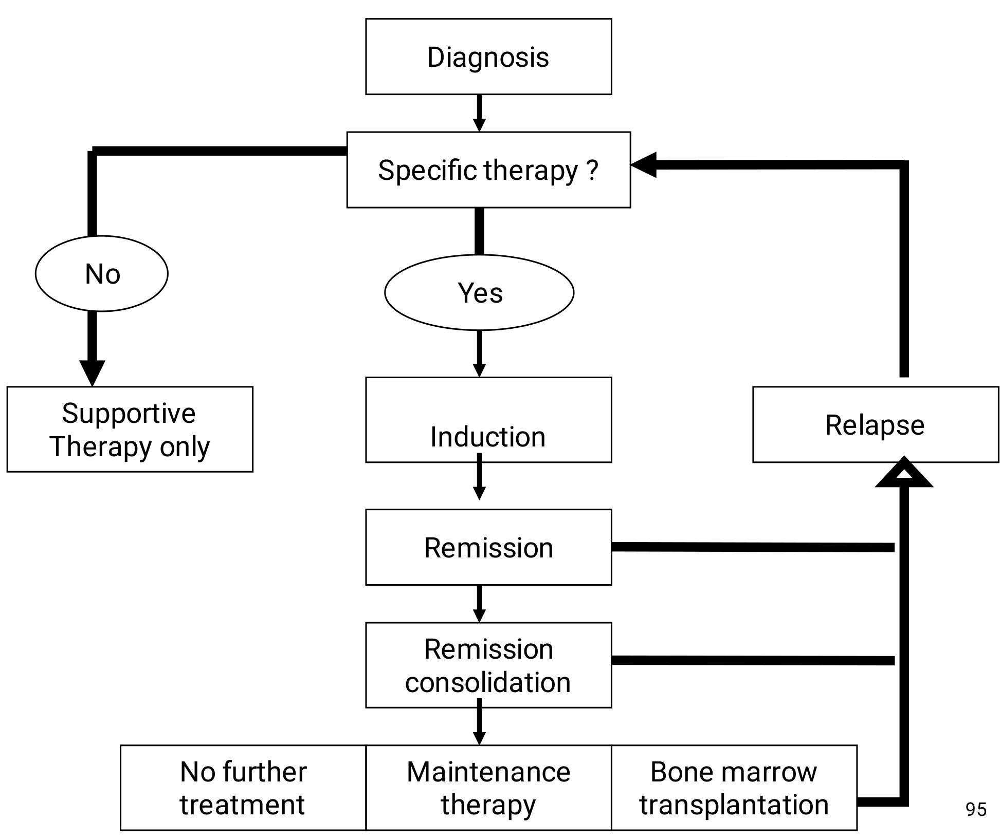
- Specific therapy?
- Yes
- Induction
- Relapse
- No further treatment
- No further treatment
- Induction
- Relapse
-
Risk for infection and bleeding
-
Risk for impaired skin integrity related to toxic effects of chemotherapy, alteration in nutrition, and impaired mobility
-
Impaired gas exchange
-
Impaired mucous membranes due to changes in epithelial lining of the gastrointestinal tract from chemotherapy or prolonged use of antimicrobial medications
-
Imbalanced nutrition, less than body requirements, related to hypermetabolic state, anorexia, mucositis, pain, and nausea
-
Acute pain and discomfort related to mucositis, WBC infiltration of systemic tissues, fever, and infection
-
Hyperthermia related to tumor lysis and infection
-
Fatigue and activity intolerance related to anemia and infection
-
Impaired physical mobility due to anemia and protective 96 isolation
-
Risk for excess fluid volume related to renal dysfunction, hypoproteinemia
-
Risk for deficient fluid volume related to potential for diarrhea, bleeding, infection, and increased metabolic rate
-
Self-care deficit due to fatigue, malaise, and protective isolation
-
Anxiety due to knowledge deficit and uncertain future
-
Disturbed body image related to change in appearance, function, and roles
-
Grieving related to anticipatory loss and altered role functioning
-
Potential for spiritual distress
-
Deficient knowledge about disease process, treatment, complication management, and self-care measure
- Infection
- Bleeding
- Renal dysfunction
- Tumor lysis syndrome
- Nutritional depletion
- Mucositis
- Preventing or managing infection and bleeding
- Managing mucositis
- Improving nutritional intake
- Easing pain and discomfort
- Decreasing fatigue and deconditioning
- Maintaining fluid and electrolyte balance
- Improving self-care
- Managing anxiety and grief
- Encouraging spiritual well-being
- Monitoring and managing potential complications
- Are Neoplasms of cells of lymphoid origin.
- Usually start in lymph nodes but can involve lymphoid tissue in the spleen, the GI (eg, the wall of the stomach), the liver, or the bone marrow.
- Often classified according to the degree of cell differentiation and the origin of the predominant malignant cell.
- Lymphomas can be broadly classified into two categories:
- Hodgkin's disease and
- Non-Hodgkin'slymphoma (NHL)
- Relatively rare malignancy
- More common in men than women
- Unicentric in origin i.e. initiates in a single node.
- Cause is unknown, but a viral etiology is suspected. (fragments of the EpsteinBarr virus have been found in to of patients; this occurs more commonly in the younger patient population)
- There is a familial pattern associated with Hodgkin's disease
- The malignant cell of Hodgkin's disease is the ReedSternberg cell, a gigantic tumor cell that is morphologically unique and is thought to be of immature lymphoid origin
- Usually begins as a painless enlargement of one or more lymph nodes on one side of the neck.
- Individual nodes are painless and firm but not hard most common sites are the cervical, supraclavicular, and mediastinal nodes; involvement of the iliac or inguinal nodes or spleen is much less common.
- A mediastinal mass may be seen on chest x-ray; occasionally, the mass is large enough to compress the trachea and cause dyspnea.
- Pruritus is common; it can be extremely distressing, and the cause is unknown.
- CBC : shows Anemia ( normochromic / normocytic), eosinophilia, neutrophilia, lymphopenia
- ESR -raised
- LFTs
- Renal function tests (RFTs)
- CXR- mediastinal mass
- CT scan thorax / abdomen / pelvis-
- Lymphangiography, Laporotomy
- Systemic Chemotherapy:
Administered Orally, Intravenous or Intramuscular for systemic treatment
- Regional Chemotherapy:
Injected into the spinal column, an organ, or a body cavity such as the abdomen, the drugs mainly affect cancer cells in those areas
- High-energy x-rays or other types of radiation to kill cancer cells or keep them from growing. The way the radiation therapy is given depends on the type, location and stage of the cancer being treated.
- External radiation therapy: uses a machine outside the body to send radiation toward the cancer.
- Internal radiation therapy: uses a radioactive substance sealed in needles, wires, or catheters that are placed directly into or near the cancer.
- Side effects may appear months or years after treatment. Regular follow-up exams are important.
- Late effects may include problems with the following:
- Development of sex organs in males.
- Fertility (ability to have children).
- Thyroid, heart, or lung disease.
- An increased risk of developing a second primary cancer.
- Impaired bone growth and development.
The risk of these long-term side effects will be considered when treatment decisions are made.
- painless lymph node enlargement -lymphadenopathy due to obstruction -Commonly, Ages 50-60, caucasians
- multiple possible causes include EBV, H pylori,
- immuno-deficency,
- autoimmune disorders,
- infectious physical & chemical agents
- connective tissue disease
- family history of lymphoma
- ionizing radiation
- Systemic manifestations
- Widely disseminated at presentation
- fever, night sweats, weight loss, anorexia, pruritis
- Extra nodular disease more common (bone marrow, gut, thyroid, lung, skin, testis, brain, Bone)
- Local manifestations
- lymphadenopathy, splenomegaly most common
- any tissue potentially can be infiltrated
- Haematological:
- Normocytic normochromic anemia,
- High ESR
- Leucocytosis, Eosinophilia, lymphopenia
- HIV testing (rule out)
- Open biopsy or fine needle aspiration (FNA) for:
Histology (to observe cell type, pattern of lymphoid infiltration)
- Bone marrow failure (infiltration)
- CNS infiltration
- Immune hemolysis or thrombocytopenia
- Compression of structures (eg spinal cord)
- Pleural/pericardial effusions, ascites
- Low-grade lymphoma - watch & wait
- Aggressive lymphoma grows faster, needs treatment as soon as possible
- Indications for treatment :
- Systemic symptoms
- Lymphadenopathy causing discomfort / disfigurement
- Bone marrow failure
- Chemotherapy is the mainstay - CHOP
A combination of drugs(abbreviated as CHOP): Cyclophosphamide, hydroxydaunorubicin(doxorubicin), vincristine (oncovin), and prednisone
- Ineffective coping (individual or family)
- Encourage expression of feelings
- Relaxation techniques/support group
- Take prednisone in a.m. to prevent insomnia
- Risk for infection r/t bone marrow suppression
- Body Image disturbance
- Encourage Wig/hats prior to first chemo
- Skin changes/photosensitive rashes
- Malignant disease of plasma cells in the bone marrow with destruction of bone
- Median survival is 3 to 5 years; there is no cure
- insidious onset;
- bone pain,
- osteoporosis,
- fractures,
- elevated serum protein
- hypercalcemia,
- renal failure,
- symptoms of anemia,
- Fatigue and weakness,
- increased serum viscosity,
- increased risk for bleeding and infection
- Chemotherapy,
- Corticosteroids,
- Stem cell transplant,
- Biphosphonates
- Nursing care is related to bone involvement and sequelae from bone breakdown. Focusing on:
- Fractures
- Pain
- Infection
i. Injury ii. Thromboplastin iii. Prothrombin iv. Thrombin v. Fibrinogen vi. Fibrin (clot)
- Thrombocytopenia
- Idiopathic thrombocytopenia purpura (ITP)
- Hemophilia
- Disseminated intravascular coagulation (DIC)
- Acquired coagulation disorders: liver disease, anticoagulants, and vitamin K deficiency
-
Is a disorder of decreased platelets
-
Causes
- Low production of platelets
- Increased breakdown of platelets
-
Symptoms
- Bruising
- Nosebleeds
- Petechiae (pinpoint microhemorrhages)
- Abnormal destruction of circulating platelets
- Autoimmune disorder
- Destroyed in hosts' spleen by macrophages
- ↑ agglutination of platelets that from microthrombi
- Associated with administration of heparin
- Develops when the body develops an antibody reaction, or allergy to heparin
- Thrombocytopenia
- Possible thrombosis after heparin therapy -Can be triggered by any type, route or amount of heparin
- Platelet count
- Prothrombin Time (PT)
- Hgb/Hct
- Corticosteroids
- Splenectomy
- Platelet transfusion
- The management for secondary thrombocytopenia is usually treatment of the underlying disease.
- Corticosteroids may be used
- Impaired production - platelet transfusions may raise the platelet count and stop bleeding or prevent spontaneous hemorrhage.
- Excessive platelet destruction- transfused platelets will also be destroyed, and the platelet count will not rise.
- Splenectomy can be a useful therapeutic intervention, but often it is not a therapeutic option
-
Avoid aspirin and aspirin-containing medications or other medications known to inhibit platelet function
-
Do not give intramuscular injections.
-
Do not insert indwelling catheters.
-
Take no rectal temperatures; do not give suppositories, enemas.
-
Use smallest possible needles when performing venipuncture.
-
Apply pressure to venipuncture sites for 5 min or until bleeding has stopped.
-
Use only soft-bristled toothbrush for mouth care.
-
Avoid suctioning if at all possible; if unavoidable, use only gentle suctioning.
-
Discourage vigorous coughing or blowing of the nose.
-
Use only electric razor for shaving.
-
Pad side rails as needed.
-
Prevent falls by ambulating with patient as necessary.
- Apply direct pressure.
- Notify physician for prolonged bleeding (eg, unable to stop within 10 min ).
- Administer platelets, fresh frozen plasma, packed
- Affects people of all ages, but it is more common among children and young women.
- Occasionally, corticosteroid are needed for a brief time.
- Many patients have no symptoms
- Common physical manifestations are easy bruising, heavy menses, and petechiae on the extremities or trunk.
- Goal is to improve the patient's platelet count, rather than to cure the disease
- If drug induced - STOP medication.
- Immunosuppressive agents - They block the binding receptors on macrophages so that the platelets are not destroyed.
- Intravenous gamma globulin - It is effective in binding the receptors on the macrophages
- AVOID platelet transfusions : patient's anti-platelet antibodies bind with the transfused platelets, causing them to be destroyed.
- Two inherited bleeding disorders which are clinically indistinguishable, although they can be distinguished by laboratory tests.
- Hemophilia A - caused by a genetic defect that results in deficient or defective factor VIII;
- Hemophilia B (aka Christmas disease) stems from a genetic defect that causes deficient or defective factor IX.
- Both types of hemophilia are inherited as X-linked traits, so almost all affected people are males;
- Females can be carriers but are almost always asymptomatic.
-
The disease, which can be severe, is manifested by hemorrhages into various parts of the body.
-
Hemorrhage can occur even after minimal trauma.
-
The frequency and severity of the bleeding depend on the degree of factor deficiency as well as the intensity of the precipitating trauma.
-
About 75% of all bleeding in patients with hemophilia occurs into joints mainly the knees, elbows, ankles, shoulders, wrists, and hips
-
Recurrent joint hemorrhages can result in damage so severe that chronic pain or ankylosis (fixation) of the joint occurs.
-
Hematomas can be superficial or deep hemorrhages into muscle or subcutaneous tissue. With severe factor deficiency, they can occur without known trauma and progressively extend in all directions.
-
When the hematomas occur within muscle, particularly in the extremities, peripheral nerves can be compressed.
- Infusion of factor VIII and factor IX concentrates
- Aminocaproic acid (Amicar) is a fibrinolytic enzyme inhibitor that can slow the dissolution of blood clots that form
- Desmopressin, induces a transient rise in factor VIII levels;
- Analgesics are commonly required to alleviate the pain associated with hematomas and hemorrhage into joints.
- Most patients with hemophilia are diagnosed as children. They often require assistance in coping
- Extensive teaching about activity restrictions and self-care measures to diminish the chance of hemorrhage and complications of bleeding
- Instructions to avoid any agents that interfere with platelet aggregation, such as aspirin, NSAIDs, herbs, nutritional supplements, and alcohol.
- During hemorrhagic episodes, the extent of bleeding must be assessed carefully.
-
Von Willebrand disease (VWD) is a blood disorder in which the blood does not clot properly.
-
Blood contains many proteins that help the body stop bleeding. One of these proteins is called von Willebrand factor (VWF).
-
People with VWD either have a low level of VWF in their blood or the VWF protein doesn't work the way it should.
-
Normally, when a person is injured and starts to bleed, the VWF in the blood attaches to platelets. This helps the platelets stick together, like glue, to form a clot at the site of injury and stop the bleeding.
-
When a person has VWD, because the VWF doesn't work the way it should, the clot might take longer to form or not form the way it should, and bleeding might take longer to stop.
-
This can lead to heavy, hard-to-stop bleeding. Although rare, the bleeding can be severe enough to damage joints or internal organs, or even be life-threatening.
- VWD is the most common bleeding disorder.
- Although VWD occurs among men and women equally, women are more likely to notice the symptoms because of heavy or abnormal bleeding during their menstrual periods and after childbirth.
- This is the most common and mildest form of VWD, in which a person has lower than normal levels of VWF.
- A person with Type 1 VWD also might have low levels of factor VIII.
- This should not be confused with hemophilia, in which there are low levels or a complete lack of factor VIII but normal levels of VWF.
- About 85% of people treated for VWD have Type 1.
- With this type of VWD, although the body makes normal amounts of the VWF, the factor does not work the way it should.
- This is the most severe form of VWD, in which a person has very little or no VWF and low levels of factor VIII.
- This is the rarest type of VWD.
- Only 3% of people with VWD have Type 3.
- Most people who have VWD are born with it. It almost always is inherited, or passed down, from a parent to a child. VWD can be passed down from either the mother or the father, or both, to the child.
- While rare, it is possible for a person to get VWD without a family history of the disease. This happens when a "spontaneous mutation" occurs. That means there has been a change in the person's gene.
- Whether the child received the affected gene from a parent or as a result of a mutation, once the child has it, the child can later pass it along to his or her children.
The major signs of VWD are:
-
Frequent or Hard-to-Stop Nosebleeds. Nosebleeds that:
-
Start without injury (spontaneous)
-
Occur often, usually five times or more in a year
-
Last more than 10 minutes
-
Need packing or cautery to stop the bleeding
-
Easy Bruising. People with VWD might experience easy bruising that:
-
Occurs with very little or no trauma or injury
-
Occurs often (one to four times per month)
-
Heavy Menstrual Bleeding. Women with VWD might have heavy menstrual periods during which:
-
Clots larger than usual are passed
-
More than one pad is soaked through every 2 hours
-
A diagnosis of anemia (not having enough red blood cells) is made as a result of bleeding from heavy periods
-
People with VWD might have longer than normal bleeding after injury, surgery, or childbirth,
-
People with VWD might have longer than normal bleeding during or after dental work, for example:
-
Heavy bleeding occurs during or after dental surgery
-
The surgery site oozes blood longer than 3 hours after the surgery
-
The surgery site needs packing or cautery to stop the bleeding
-
The amount of bleeding depends on the type and severity of VWD. Other common bleeding events include:
-
Blood in the stool (feces) from bleeding into the stomach or intestines
-
Blood in the urine from bleeding into the kidneys or bladder
-
Bleeding into joints or internal organs in severe cases
- Personal and family history of bleeding.
- Check for unusual bruising or other signs of recent bleeding
- Blood tests that measure how the blood clots.
- Because certain medications can cause bleeding, even among people without a bleeding disorder, ask about recent or routine medications taken that could cause bleeding or make bleeding symptoms worse.
-
The type of treatment prescribed for VWD depends on the type and severity of the disease. For minor bleeds, treatment might not be needed.
-
The most commonly used types of treatment are:
-
Desmopressin Acetate Injection (mainly type 1). It works by making the body release more VWF into the blood. It helps increase the level of factor VIII in the blood as well.
-
Desmopressin Acetate Nasal Spray. This highstrength nasal spray (Stimate ) is used to treat people with milder forms of VWD. It works by making the body release more VWF into the blood.
-
Antifibrinolytic Drugs. These drugs (for example, Amicar®, Lysteda®) are either injected or taken orally to help slow or prevent the breakdown of blood clots.
-
Birth Control Pills. Birth control pills can increase the levels of VWF and factor VIII in the blood and reduce menstrual blood loss. A healthcare provider can prescribe these pills for women who have heavy menstrual bleeding.
- DIC is not a disease but a sign of an underlying condition.
- DIC may be triggered by sepsis, trauma, cancer, shock, abruptio placentae, toxins, or allergic reactions
- It is potentially life-threatening.
- In DIC, the normal hemostatic mechanisms are altered so that a massive amount of tiny clots forms in the microcirculation.
- Initially, the coagulation time is normal. However, as the platelets and clotting factors are consumed to form the microthrombi, coagulation fails. Thus, the paradoxical result of excessive clotting is bleeding.
- The clinical manifestations of DIC are reflected in the organs, which are affected either by excessive clot formation (with resultant ischemia to all or part of the organ) or by bleeding.
- The bleeding is characterized by low platelet and fibrinogen levels
- Minimal occult internal bleeding
- Profuse hemorrhage from mucous membranes, venipuncture sites, and the GI and urinary tracts.
- Organ dysfunction, such as renal failure and pulmonary and central nervous system infarctions as a result of microthromboses, macrothromboses, or hemorrhages.
-
Treat the underlying cause of the DIC
-
Correct the secondary effects of tissue ischemia by:
-
improving oxygenation,
-
replacing fluids,
-
correcting electrolyte imbalances, and
-
administering vasopressor medications.
-
the depleted coagulation factors and platelets may be replaced to reestablish the potential for normal hemostasis and thereby diminish bleeding.
-
Cryoprecipitate is given to replace fibrinogen and factors V and VII;
-
Fresh frozen plasma is administered to replace other coagulation factors.
-
Heparin - reserved for the patient in whom thrombotic manifestations predominate or in whom extensive blood component replacement fails to halt the hemorrhage or increase fibrinogen and other clotting levels.
- Ineffective tissue perfusion related to microthrombi
- Anxiety and fear of the unknown and possible death
- Risk for deficient fluid volume related to bleeding
- Risk for impaired skin integrity related to ischemia or bleeding
- Potential for excess fluid volume related to excessive blood/factor component
- Blood undergoes "typing and cross-match":
- Typing to determine ABO and Rh factor
- Cross-matching to determine compatibility between donor and recipient blood
- Once the blood has been taken from the blood bank, it must be administered within 30 minutes
- The nurse must ensure:
- Positive patient identification
- Appropriateness of blood component
- Blood product inspection
- Verification of donor - recipient compatibility
- Verification of product expiration date
-
Determine Client's
- Allergies
- Previous Transfusion Reactions
-
Administer Within 30 Minutes of Receiving From Blood Bank.
-
Never Add ANY Meds to Blood Products.
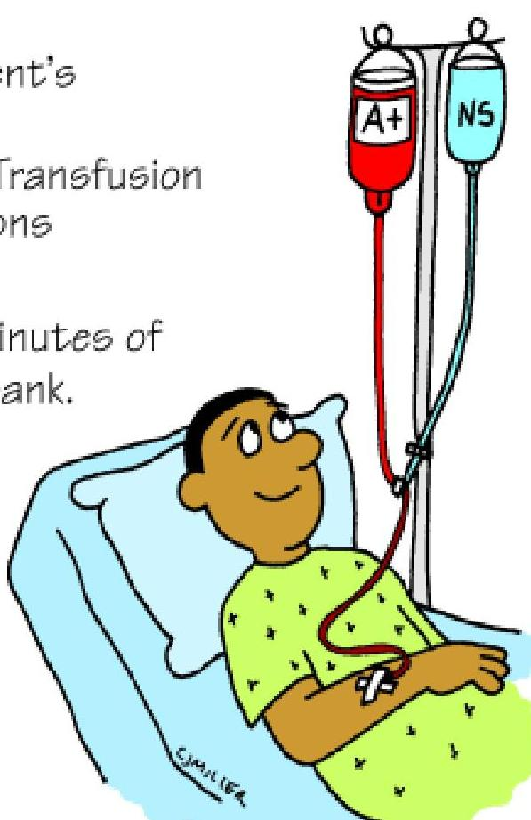
-
Check Crossmatch Record With 2 Nurses:
- ABO-Group
- RH Type
- Client's Name
- Hospital #
- Expiration Date
-
Do NOT Warm Unless Risk of Hypothermic Response THEN Only By Specific Blood Warming Equipment.
-
Infuse Each Unit Over 2-4 Hours BUT No Longer Than 4 Hours.
- Chills
- Fever
- Headache
- Flushing
- Tachycardia
- Anxiety
- Mild:
- Hives
- Pruritus
- Facial Flushing
- Severe:
- Severe Shortness of Breath
- Bronchospasm
- Anxiety
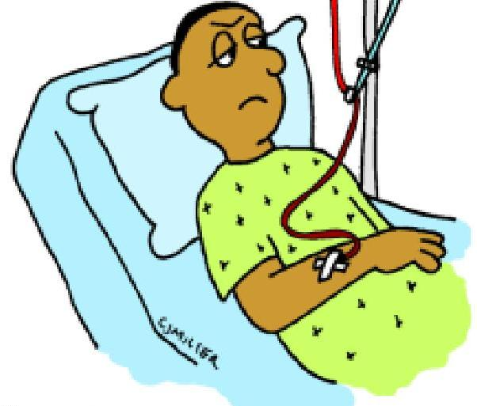
- Low Back Pain
- Hypotension
- Tachycardia
- Fever and Chills
- Chest Pain
- Tachypnea
- Hemoglobinuria
- May Have Immediate Onset
- Stop Transfusion and notify Physician.
- Change IV Tubing.
- Treat symptoms if present → O2, fluids, epinephrine as ordered.
- Recheck crossmatch record with unit.
- Obtain 2 blood samples distal to infusion site.
- Obtain first UA-test for hemoglobinuria.
- Monitor fluid/electrolyte balance.
- Evaluate serum calcium levels.
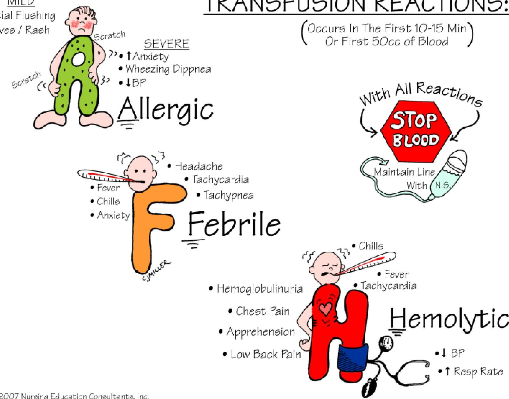
- Headache
- Tachycardia
- Tachypnea
- Febrile
- Hemoglobulinuria
- Chest Pain
- Apprehension
- Low Back Pain
- Hemolytic
- BP
- Resp Rate
- Hemoglobinuria
- Chest Pain
- Apprehension
- Low Back Pain
- HCl
- Hemoglobin
- Hemolytic
- BP
- Resp Rate
- Serious disease involving the WBC and is characterized by decrease in the number of circulating granulocytes.
- The terms agranulocytosis, neutropenia, and granulocytopenia are commonly used interchangeably for a reduced quantity of leukocytes (WBCs).
Types:
- Primary Agranulocytosis- unknown etiology
- Secondary Agranulocytosis- known etiology.
- Antineoplastics,
- Antibiotics,
- Anticonvulsants,
- Antiinflammatories,
- Antithyroid agents,
- Diuretics, and
- Phenothiazines
Occur at any age- particularly among adults. Women are more affected.
- High fever,
- chills,
- sore throat,
- Malaise, weakness
- Skin appears pale and anemic,
- Presence of infections
- Regional lymphadenitis,
- Complication- Generalized sepsis.
- Necrotizing ulceration of the oral cavity, tonsils, and pharynx, particularly gingiva and palate.
- Necrotic ulcers are covered by gray or even black membrane.
- No purulent discharge is noted.
- Excessive salivation.

- WBC are often below 2000 cells per cubic mm.
- Almost complete absence of granulocytes
- RBC and platelet counts are normal.
- Recognition and withdrawal of the causative drugs
- Oral hygiene should be ensuredto foster a clean oral environment.
END